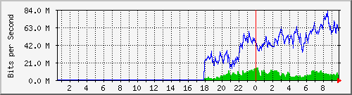
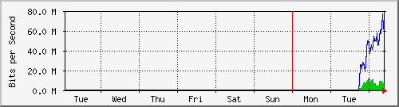
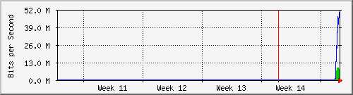
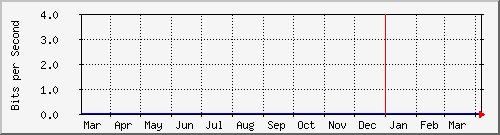

2.17.10
Tobias Oetiker <tobi@oetiker.ch>and Dave Rand <dlr@bungi.com>
The statistics were last updated Wednesday, 8 April 2026 at 9:50,
at which time 'MikroTik-CCR1036' had been up for 58 days, 13:16:13.

| Max | Average | Current | |
|---|---|---|---|
| In: | 14.5 Mb/s (1.5%) | 6756.1 kb/s (0.7%) | 6601.6 kb/s (0.7%) |
| Out: | 82.9 Mb/s (8.3%) | 44.4 Mb/s (4.4%) | 57.4 Mb/s (5.7%) |

| Max | Average | Current | |
|---|---|---|---|
| In: | 11.6 Mb/s (1.2%) | 6611.0 kb/s (0.7%) | 6050.4 kb/s (0.6%) |
| Out: | 76.1 Mb/s (7.6%) | 43.1 Mb/s (4.3%) | 61.3 Mb/s (6.1%) |

| Max | Average | Current | |
|---|---|---|---|
| In: | 9310.4 kb/s (0.9%) | 5691.6 kb/s (0.6%) | 4137.5 kb/s (0.4%) |
| Out: | 49.5 Mb/s (4.9%) | 33.8 Mb/s (3.4%) | 49.1 Mb/s (4.9%) |

| Max | Average | Current | |
|---|---|---|---|
| In: | 0.0 b/s (0.0%) | 0.0 b/s (0.0%) | 0.0 b/s (0.0%) |
| Out: | 0.0 b/s (0.0%) | 0.0 b/s (0.0%) | 0.0 b/s (0.0%) |
| GREEN ### | Incoming Traffic in Bits per Second |
|---|---|
| BLUE ### | Outgoing Traffic in Bits per Second |